In this chapter we will explain the basics for plotting functions and data, for which we will use the matplotlib.pyplot (sub)package. We import it under the alias plt. You might wonder why we use the name plt and not the perhaps more obvious choice plot. This is because plot() is a command that we will be using, so we do not want to create any conflicts with this function when executing a Python script.
7.1 Basic plotting
In this section we will explain step-by-step how to generate a nice looking figure containing a visualization of a one-dimensional function. We start with plotting the function f(x) = x^2 + 2x -1 for some values of x in a two-dimensional figure.
import numpy as npimport matplotlib.pyplot as plt# Define the function fdef f(x):return x**2+2*x -1# Define the x range of x-valuesx = np.array([-3,-2,-1,0,1,2,3])# Compute the function values f(x[i]) of the elements x[i] # and store them in the array yy = f(x)#Create the figureplt.figure()# Create the plotplt.plot(x, y)# Show the plotplt.show()
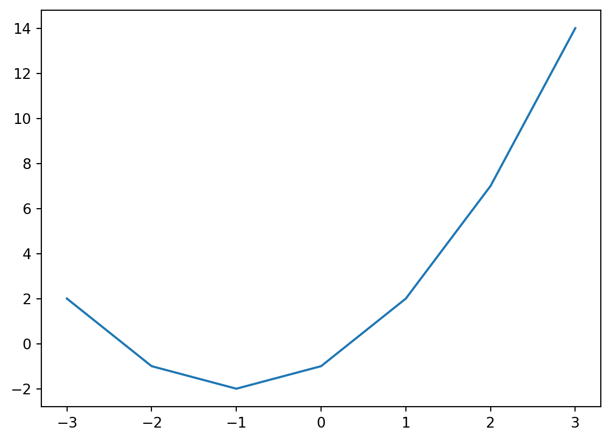
You can view the figure in the Plots pane (or tab) in Spyder.
If the resolution of the plots in the Plots pane does not seem good enough, you can increase it by going to “Tools > Preferences > IPython console > Graphics > Inline backend > Resolution” and set the resolution to, for example, 300 dpi.
You can get the Plots pane in fullscreen by going to the button with the three horizontal lines in the top right corner and choose “Undock”. You can “Dock” the pane again as well if you want to leave the fullscreen mode.
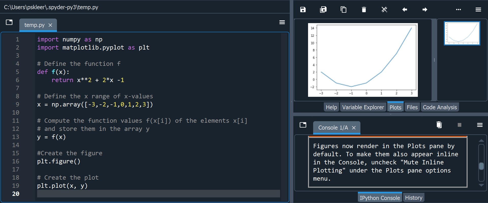
IPython Console
We will next explain what the code above is doing. After defining the function f, we create the vector (i.e., Numpy array)
x = [x_1,x_2,x_3,x_4,x_5,x_6,x_7] = [-3,-2,-1,0,1,2,3].
Because the function f is vectorized, we can right away compute all the function values in these points. We store them in the array y = f(x), that is,
Next, we create an (empty) figure using the command plt.figure(). Then comes the most important command, plt.plot(x,y), that plots the elements in the vector x against the elements in the vector y = f(x), and connects consecutive combinations (x_i,y_i) and (x_{i+1},y_{i+1}) with a line segment. For example, we have (x_1,y_1) = (-3,2) and (x_2,y_2) = (-2,-1). The left most line segment is formed by connecting these points.
If you only want to plot the points (x_i,y_i), and not the line segments, you can use plt.scatter(x,y) instead of plt.plot(x,y).
import numpy as npimport matplotlib.pyplot as plt# Define the function fdef f(x):return x**2+2*x -1# Define the x range of x-valuesx = np.array([-3,-2,-1,0,1,2,3])# Compute the function values f(x[i]) of the elements x[i] # and store them in the array yy = f(x)#Create the figureplt.figure()# Create the plotplt.scatter(x, y)# Show the plotplt.show()
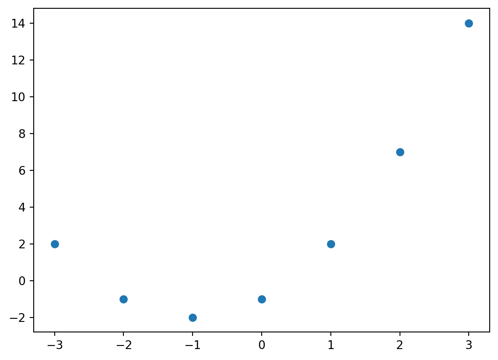
Observe that the (blue) line in the figure that was generated using plt.plot(x,y) is not very “smooth”, i.e., the function visibly is connected by line segments. To get a smoother function line, we can include more points in the vector x. This can be done, for example, with the linspace() function that we have seen in Chapter 3.
Let us plot again the function f, but this time with 600 elements in x in the interval [-3,3]. We use plt.plot() again, instead of plt.scatter(). We now obtain a much smoother function line.
import numpy as npimport matplotlib.pyplot as plt# Define the function fdef f(x):return x**2+2*x -1# Define the x range of x-valuesx = np.linspace(-3,3,600)# Compute the function values f(x[i]) of the elements x[i] # and store them in the array yy = f(x)#Create the figureplt.figure()# Create the plotplt.plot(x, y)# Show the plotplt.show()
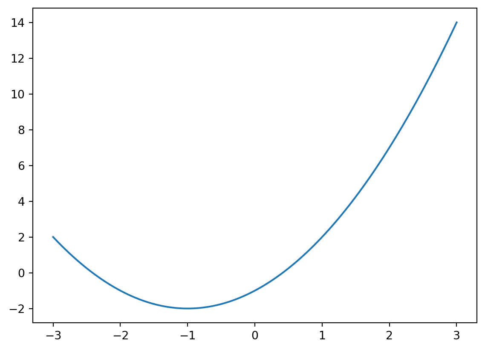
You can add a legend for the line/points that you plot by using the label argument of plt.plot(). For example we can add the function description using plt.plot(x,y,label='$f(x) = x^2 + 2x - 1$'). This is in particular useful if you plot multiple functions in one figure, as the example below illustrates. There we plot the functions f and g, with g(x) = 3x a new function. To have the labels appear in the legend of the figure, you need to add a legend to the figure with plt.legend().
If you want to add labels to the horizontal and vertical axis, you can use the commands plt.xlabel() and plt.ylabel().
import numpy as npimport matplotlib.pyplot as plt# Define the function fdef f(x):return x**2+2*x -1# Define the function gdef g(x):return3*x# Define the x range of x-valuesx = np.linspace(-3,3,600)# Compute the function values f(x[i]) of the elements x[i] # and store them in the array yy = f(x)z = g(x)#Create the figureplt.figure()# Create the plotplt.plot(x, y, label='$f(x) = x^2 + 2x - 1$')plt.plot(x, z, label='$g(x) = 3x$')# Create labels for axesplt.xlabel('x')plt.ylabel('Function value')# Create the legend with the specified labelsplt.legend()# Show the plotplt.show()
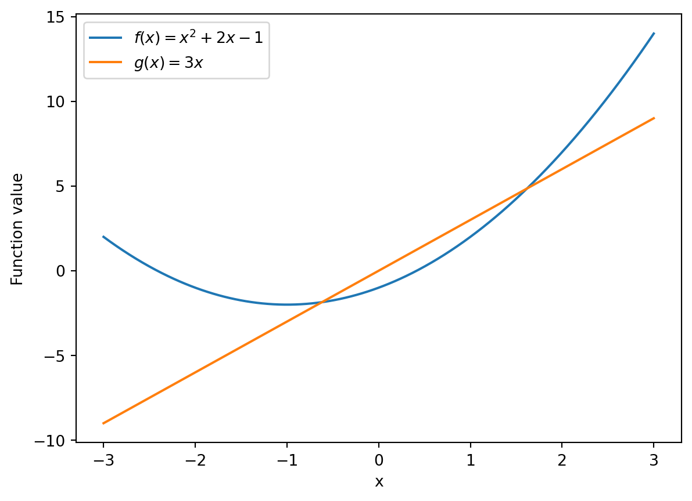
You might observe that the range on the vertical axis changed now that we added a second function to the plot. When we only plotted the function f, the vertical axis ranged from -2 to 14, but now with the function g added to it, it ranges from -10 to 15.
You can fix the range [c,d] on the vertical axis using the command plt.ylim(c,d), and to fix the range of the horizontal axis to [a,b], you can use plt.xlim(a,b). In the figure below, we fix the vertical range to [c,d] = [-10,14] and the horizontal axis to [a,b] = [-3,3].
import numpy as npimport matplotlib.pyplot as plt# Define the function fdef f(x):return x**2+2*x -1# Define the function gdef g(x):return3*x# Define the x range of x-valuesx = np.linspace(-3,3,600)# Compute the function values f(x[i]) of the elements x[i] # and store them in the array yy = f(x)z = g(x)#Create the figure objectplt.figure()# Create the plot within the figureplt.plot(x, y, label='$f(x) = x^2 + 2x - 1$')plt.plot(x, z, label='$g(x) = 3x$')# Create labels for axesplt.xlabel('x')plt.ylabel('Function value')# Create the legend with the specified labelsplt.legend()# Fix the range of the axesplt.xlim(-3,3)plt.ylim(-10,14)# Show the plotplt.show()
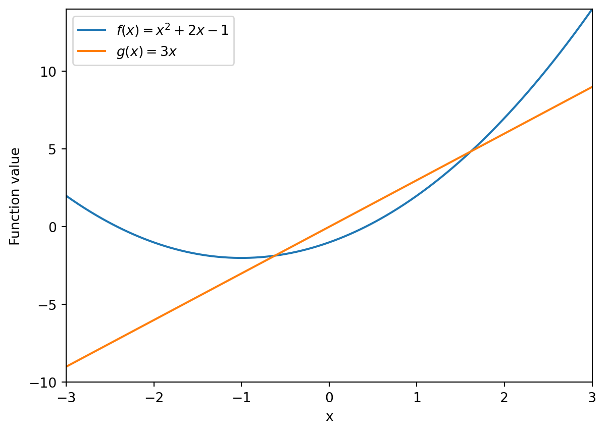
Finally, you can also add a title to the plot using the command plt.title() as well as a grid in the background of the figure using plt.grid(). These are illustrated in the figure below.
import numpy as npimport matplotlib.pyplot as plt# Define the function fdef f(x):return x**2+2*x -1# Define the function gdef g(x):return3*x# Define the x range of x-valuesx = np.linspace(-3,3,600)# Compute the function values f(x[i]) of the elements x[i] # and store them in the array yy = f(x)z = g(x)#Create the figureplt.figure()# Create the plotplt.plot(x, y, label='$f(x) = x^2 + 2x - 1$')plt.plot(x, z, label='$g(x) = 3x$')# Create labels for axesplt.xlabel('x')plt.ylabel('Function value')# Create the legend with the specified labelsplt.legend()# Fix the range of the axesplt.xlim(-3,3)plt.ylim(-10,14)# Add title to the plotplt.title('A first plot in Python of two functions')# Add grid to the backgroundplt.grid()# Show the plotplt.show()
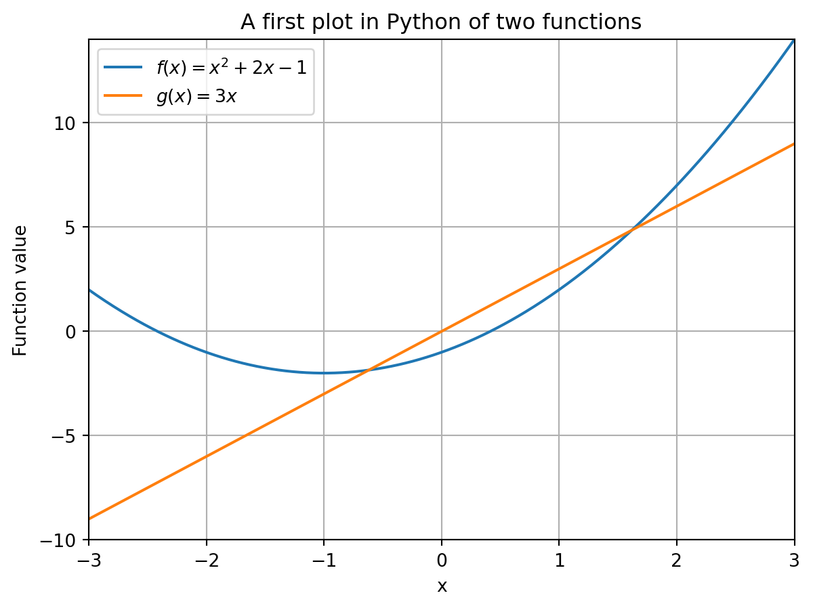
This completes the description of the basics of plotting a figure. As a final remark, there are many more plotting options that we do not cover here, but which can be found in the documentation. For example, with the plt.xticks() and plt.yticks() commands you can specify the numbers you want to have displayed on the horizontal and vertical axis, respectively. Also, there are commands to specify line color, width, type (e.g., dashed) and much more!
7.2 Subplots
In this section we will describe how you can create multiple subplots in one figure. There are various ways to do this, e.g., in a predefined grid or on a plot-by-plot basis.
7.2.1 Fixed grid
We start with explaining the basics of the subplots() function. The syntax for creating a figure with a predefined grid on which plots can be placed is as follows.
m, n =2, 3# Create figure with six subplots in an n x m gridfig, ax = plt.subplots(m,n)plt.show()
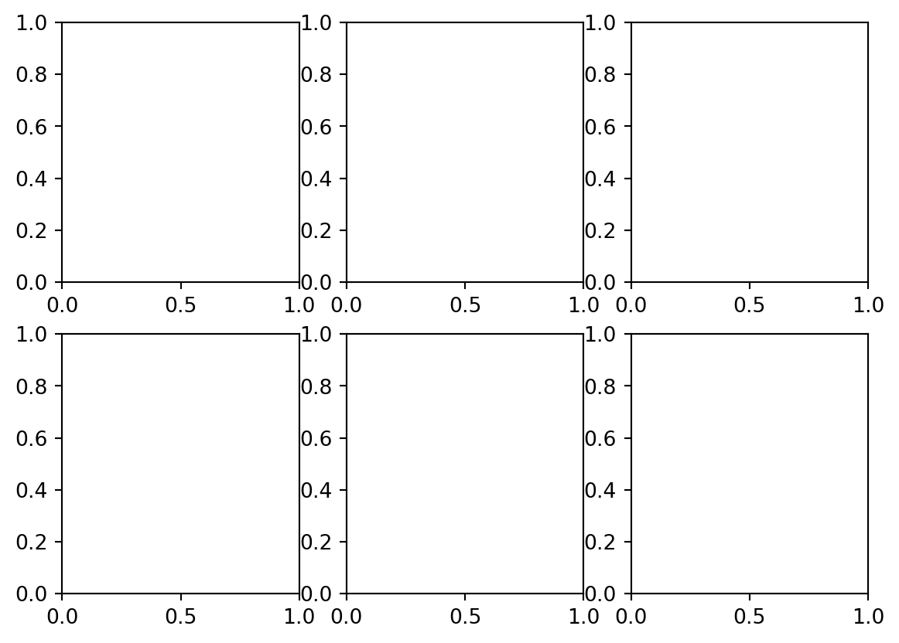
This creates a figure object, with name fig in this case, and a 2 \times 3 array ax with so-called Axes objects that is place inside the figure. We are going to place the plots on the positions of the ax array.
# Shape of arrayprint(np.shape(ax))
(2, 3)
The fact that arrays can also store other objects besided numbers, is something we also already saw when using the pulp package for linear optimization in Chapter 5.
One might argue that the figure above is visually not very appealing, especially because the horizontally adjacent plots are very close to each other. You can get more control over the size of the figure (in which the plots are placed) by using the figsize keyword whose argument should be a tuple (w,h) indicating the width w and the height h of the figure.
Note that the input arguments of figsize are perhaps a bit counterintuitive, as for the shape of a NumPy array (like the command above) the first number is always the “height” of the matrix, and the second number the “width”, but this is the other way around for the measurements of a figure.
# Parameters for figure with n x m subplotsm, n =2, 3# Parameters w (width) and h (height) for figure size w, h =12, 4# Create figure with six subplots in a 2 x 3 fashionfig, ax = plt.subplots(m,n, figsize=(w,h))# Show the plotplt.show()
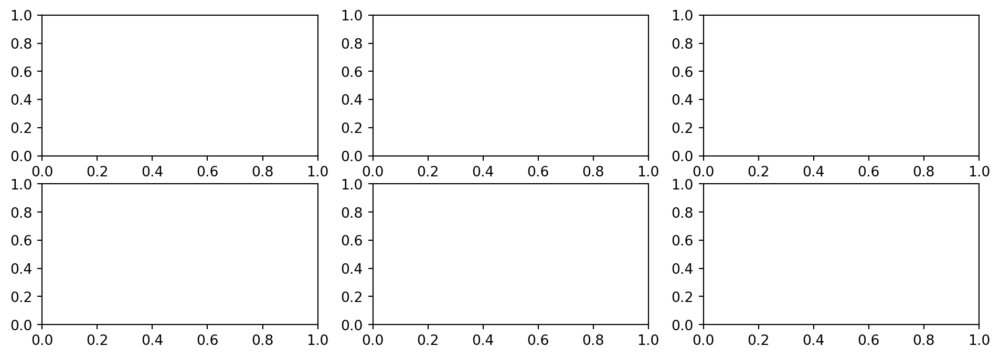
It usually also helps to put in the command plt.tight_layout() that prevents plots within a figure from overlapping by addings some spacing between them.
# Parameters for figure with n x m subplotsm, n =2, 3# Parameters w (width) and h (height) for figure size w, h =12, 4# Create figure with six subplots in a 2 x 3 fashionfig, ax = plt.subplots(m,n, figsize=(w,h))# Tighten layoutplt.tight_layout()# Show the plotplt.show()
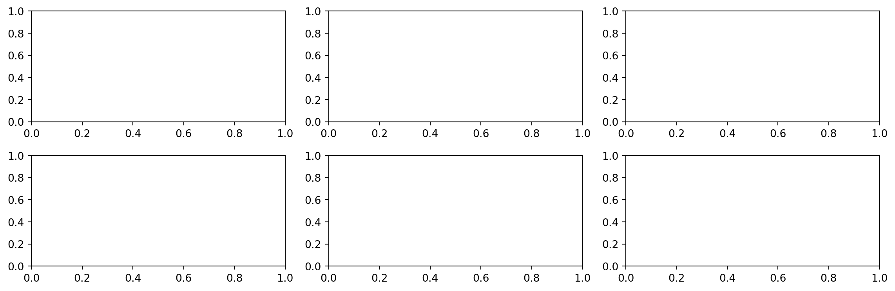
We continue by explaining how you can add information to the indiviual plots in the figure. For this, we will switch to a figure with a 2 \times 2 array for in total four subplots.
# Parameters for figure with n x m subplotsn =2# Parameters w (width) and h (height) for figure size w =5# Create figure with six subplots in a 2 x 2 fashionfig, ax = plt.subplots(n,n, figsize=(w,w))# Tighten layoutplt.tight_layout()# Show plotplt.show()
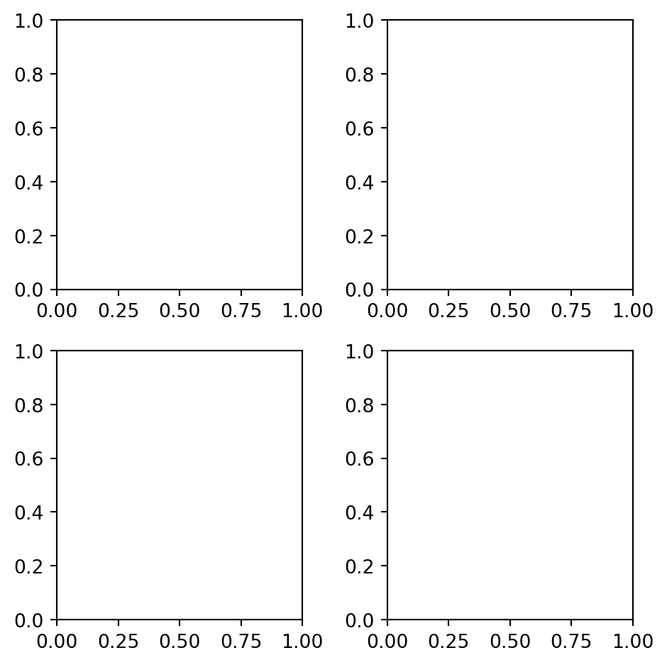
You can access the individual plot at position (i,j) of the array ax using ax[i,j], and set properties of it using ax[i,j].plot_option where plot_option is a plotting command.
Sometimes you need to use a slightly different command than when you plot a single plot in a figure. For many commands, you need to add set_ to it. For example, instead of plt.xlim(a,b) you need to use ax[i,j].set_xlim(a,b).
To set the title of the whole figure, when named fig, you can use fig.suptitle() instead of plt.title().
# Define function to plotdef f(x):return x**2a =-3b =3# Define x-rangex = np.linspace(a,b,600)# Create figure with six subplots in a 2 x 2 fashionfig, ax = plt.subplots(n,n, figsize=(w,w))# Title of whole figurefig.suptitle("Four plots in one figure")# Tighten layoutplt.tight_layout()# Create plot on top-left positionax[0,0].plot(x,f(x))ax[0,0].set_xlim(a,b)ax[0,0].set_ylim(0,9)ax[0,0].set_xlabel("x")ax[0,0].set_ylabel("f(x)")ax[0,0].set_title("Plot of function $f(x) = x^2$")ax[0,0].grid()# Tighten layoutplt.tight_layout()# Show plotplt.show()
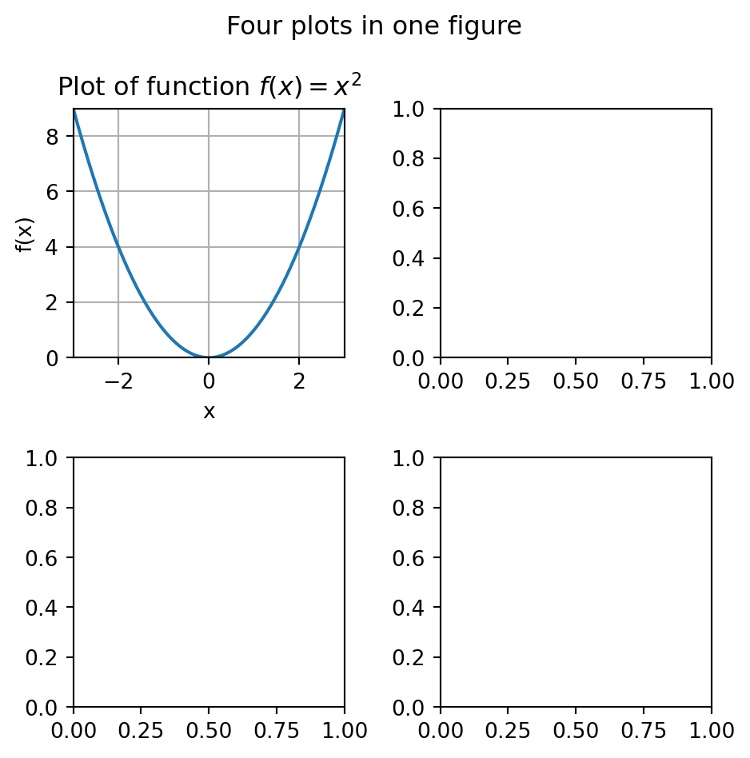
7.2.2 Iterative adding
Instead of predefining a grid in which the subplots will appear, it is also possible to add subplots in a more dynamic, iterative fashion to a grid using add_subplot(). The function typically gives you a bit more flexibility.
For example, we can create four plots of which one spans the whole first “row” and that has three smaller plots underneath it. The numbering of the subplots follows the largest axis changing fasted principle, so the subplots are placed first along the first row, then the second row, etc.
If we would have a 2 \times 3 grid, then the numbering of the subplots would be as follows:
Note that the counting start at 1 instead of 0, as is more common in Python.
After having created a figure, we can add subplots to an m \times n grid using fig.add_subplot(m,n,(p,q)). The tuple (p,q) indicates that we want to place the subplot on positions p through q in the figure. If there is only one position p at which you want to place the subplot, you can use (p), or simply p, as the third argument of add_subplot().
To avoid unnecessary repetition, it can often help to plot subplots using a for-loop. We will illustrate this for the figure below, in which we plot the function f(x) = \sin(x) on the first row or our grid, and its first three derivatives in smaller subplots under it.
You can make the plot look nicer by adding labels, legends, different line colors, a grid, etc.
# Define x-rangex = np.linspace(-5,5,600)# Function valuesy = np.sin(x)# Values of 1st, 2nd and 3rd derivativederiv = np.vstack((np.cos(x),-np.sin(x),-np.cos(x)))# Store function names in listfunction_names = ["Function f", "First derivative", "Second derivative", "Third derivative"]# Create figurefig = plt.figure(figsize=(7,5)) # Will create an m x n grid with subplotsm, n =2, 3# Add first subplotax_f = fig.add_subplot(m,n,(1,n))ax_f.plot(x,y)ax_f.set_title(function_names[0])# Add derivativesfor i inrange(n): ax_deriv = fig.add_subplot(m,n,n+1+i) ax_deriv.plot(x,deriv[i]) ax_deriv.set_title(function_names[1+i])# Tighten layoutplt.tight_layout()# Show plotplt.show()
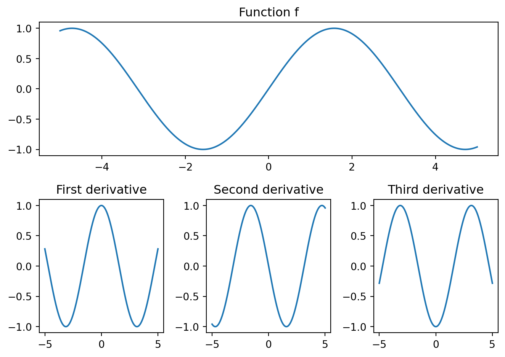
7.3 Bivariate functions
In Python it is also possible to plot a function with two variables, a so-called bivariate function. For example, consider z = f(x,y) = x^2 + y^2 that we would like to visualize on the (x,y)-domain [0,4] \times [3,8].
Before going into the plotting commands we discuss in more detail how to efficiently compute the function values on the specified domain.
Just as with two-dimensional plotting, the idea is that we want compute the function values on a fine-grained discretization of the desired domain. In two dimensions, we can create such a discretization easily using the mgrid function from NumPy.
Suppose we discretize [0,4] \times [3,8] by considering all the integer combinations. We can do this with mgrid by specifying for both dimensions the range that we are interested in using index slicing.
# Note that the end index is not includedX, Y = np.mgrid[0:5, 3:9]
If you input two ranges then the output are two matrices. You could also use this function for higher-dimensional problems.
To be precise, the matrix X contains the first element of every coordinate (i,j) \in [a,b] \times [c,d], that is, the value i, and Y contains the second element, that is, the value j.
The same can be achieved with the function meshgrid() that takes as input the discretized ranges of x and y. Here the matrix X and Y are tranposed compared to the output of mgrid.
x = np.arange(0,5)y = np.arange(3,9)X, Y = np.meshgrid(x,y)print("X = \n", X)print("Y = \n", Y)
If we now want to compute the function values in the points (i,j), we can simply use Z = X**2 + Y**2. Note that ** is a vectorized operation that is pointwise applied when executed on a two-dimensional array. So X**2 gives the squares of all the x-coordinate of all the grid points, and Y**2 the squares of all the y-coordinates. In other words, for a grid point (i,j) we get Z[i,j] = X[i,j]**2 + Y[i,j]**2.
# Compute function values of f(x,y) = x^2 + y^2Z = X**2+ Y**2# For every (i,j), computes i**2 + j**2print("Z = \n", Z)
# Define functiondef f(x,y):return x**2+ y**2# Define gridX, Y = np.mgrid[0:5, 3:9]# f(X,Y) gives all function values of the grid points.print("f(x,y) = \n", f(X,Y))
We can create a more fine-grained plot by including more points in the ranges of the x- and y-values. Again, this can be done using slicing notation.
# Define functiondef f(x,y):return x**2+ y**2# Define grid with step size of 0.2 in x,y-coordinatesstep =0.2X, Y = np.mgrid[0:2.1:step, 3:4.1:step]# Print x-values of grid pointsprint("X = \n", X)# Print y-values of grid pointsprint("Y = \n", Y)# f(X,Y) gives all function values of the grid points.print("f(X,Y) = \n", f(X,Y))
One way to visualize a function f : \mathbb{R}^2 \rightarrow \mathbb{R} is by using a contour plot with plt.contour(). What such a plot does is that it creates a two-dimensional plot where for given values z_0 \in \mathbb{R} it plots all points (x,y) \in \mathbb{R}^2 for which f(x,y) = z_0 with the same color.
The function plt.contour() takes as input the arrays X, Y and Z. The input order is important here. Python plots the point (X[i,i],Y[i,j]) and assigns a common color to all such points with the same function value (i.e., the same Z[i,j]-value).
The levels keyword argument determines how many different colors, i.e., z_0-values, are plotted. For this Python uses a so-called colormap that has a shifting scale indicating a shift in the value of z_0. You can plot a color legend with plt.colorbar().
# Define functiondef f(x,y):return x**2+ y**2# Grid parametersb =4step =0.001# Define grid [0,b]^2 with given step sizeX, Y = np.mgrid[0:b:step, 0:b:step]# Create figureplt.figure()# Create contour plotplt.contour(X, Y, f(X,Y), levels=10)# Add labels and titleplt.xlabel("x")plt.ylabel("y")plt.title("Contour plot of function")# Show the plotplt.colorbar() # Add a color bar for reference# Show plotplt.show()
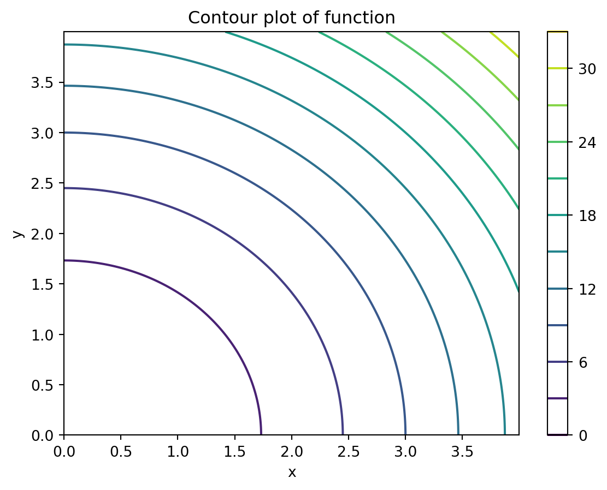
The same plot as above with 50 color levels is given below.
Show code generating the plot below
# Define functiondef f(x,y):return x**2+ y**2# Grid parametersb =4step =0.001# Define grid [0,b]^2 with given step sizeX, Y = np.mgrid[0:b:step, 0:b:step]# Create figureplt.figure()# Create contour plotplt.contour(X, Y, f(X,Y), levels=50)# Add labels and titleplt.xlabel("x")plt.ylabel("y")plt.title("Contour plot of function")# Show the plotplt.colorbar() # Add a color bar for reference# Show plotplt.show()
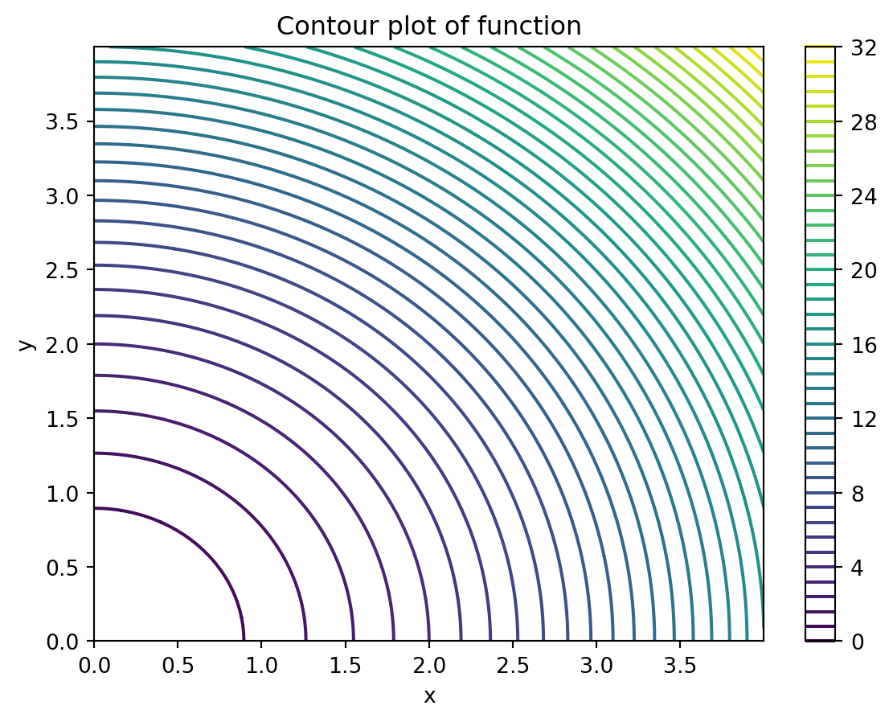
You can also choose to fill up the white space between the different contour lines. Then you should use plt.contourf() instead of plt.contour(). The same plot with 50 color levels and plt.contourf() is given below.
Show code generating the plot below
# Define functiondef f(x,y):return x**2+ y**2# Grid parametersb =4step =0.001# Define grid [0,b]^2 with given step sizeX, Y = np.mgrid[0:b:step, 0:b:step]# Create figureplt.figure()# Create contour plot with 50 levelsplt.contourf(X, Y, f(X,Y), levels=50)# Add labels and titleplt.xlabel("x")plt.ylabel("y")plt.title("Contour plot of function")# Show the plotplt.colorbar() # Add a color bar for reference# Show plotplt.show()
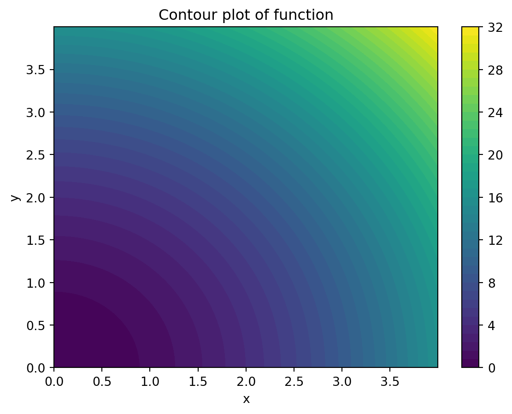
Finally, you can change the color chosen by Python using the cmap keyword argument. There are various color maps available; see the documentation.
Below we have plotted the figure above with the inferno colormap.
Show code generating the plot below
# Define functiondef f(x,y):return x**2+ y**2# Grid parametersb =4step =0.001# Define grid [0,b]^2 with given step sizeX, Y = np.mgrid[0:b:step, 0:b:step]# Create figureplt.figure()# Create contour plot with 50 levelsplt.contourf(X, Y, f(X,Y), levels=50, cmap="inferno")# Add labels and titleplt.xlabel("x")plt.ylabel("y")plt.title("Contour plot of function")# Show the plotplt.colorbar() # Add a color bar for reference# Show plotplt.show()
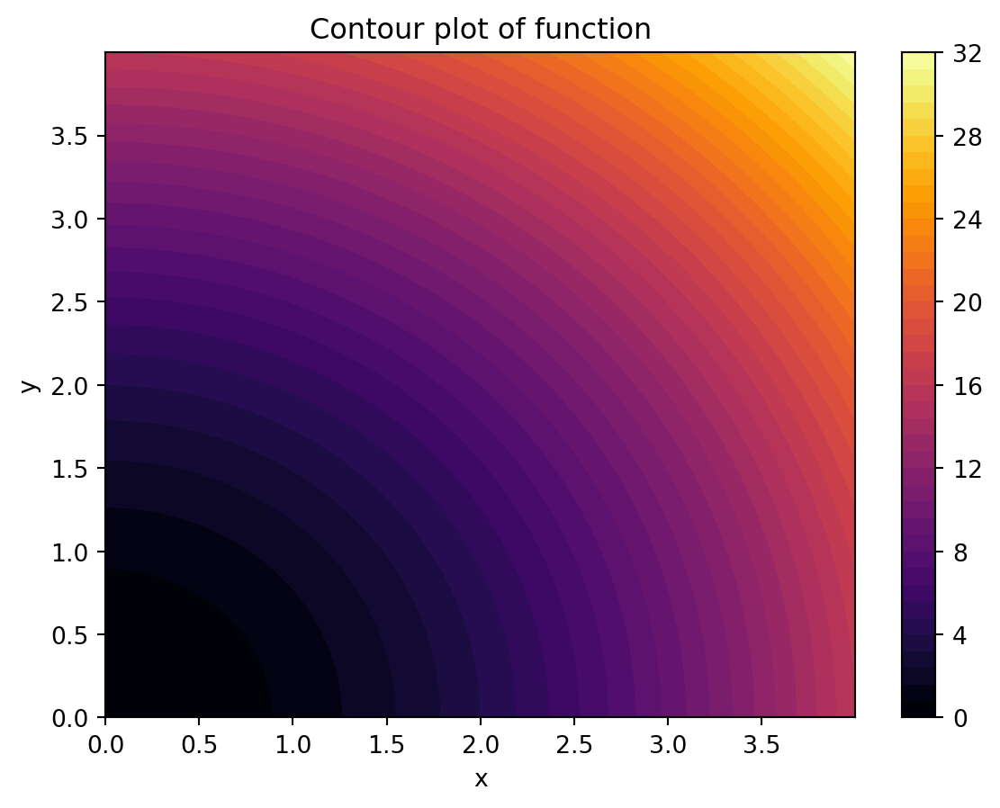
7.3.2 3D plot
Another way of visualizing a bivariate function is using a 3D plot, in which we have an x-, y- and z-axis. This you can do, e.g., with the plot_surface() function. To use this function we have to explicitly create an Axes object (plot), which we call ax, with three axes using ax = plt.axes(projection='3d').
# Define functiondef f(x,y):return x**2+ y**2# Grid parametersb =4step =0.001# Define grid [0,b]^2 with given step sizeX, Y = np.mgrid[0:b:step, 0:b:step]# Create figurefig = plt.figure(figsize=(7,5))# Create Axes object with three axesax = plt.axes(projection='3d')# Create surface plotax.plot_surface(X, Y, f(X,Y), cmap="inferno")# Add labels and titleax.set_xlabel("x")ax.set_ylabel("y")ax.set_title("Surface plot of function")# Show plotplt.show()
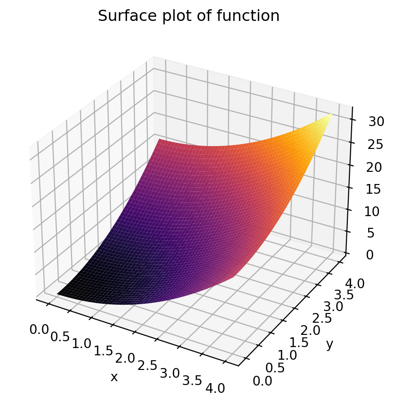
We close this chapter by remarking that we have only shown a small fraction of the plotting functionality that Python has to offer. There are many more options to create nice looking plots.